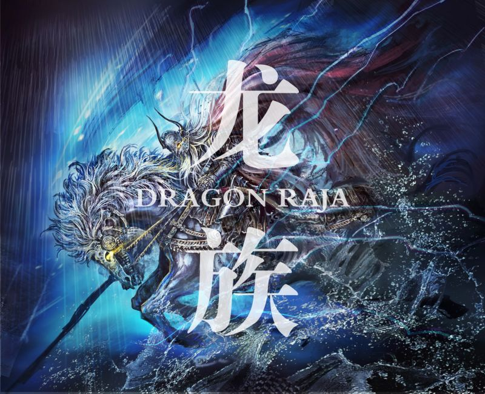

《龙族》是作家江南创作的系列长篇魔幻小说，由《龙族Ⅰ火之晨曦》、《龙族Ⅱ悼亡者之瞳》、《龙族Ⅲ黑月之潮》、《龙族Ⅳ奥丁之渊》组成。目前尚未完结。2009年10月1日开始在小说绘上连载，第一部于2010年04月首次出版，第二部于2011年05月出版，第三部上篇于2012年12月出版，第三部中篇于2013年07月出版，第三部下篇于2013年12月出版，第四部则于2015年10月出版，第五部于2016年10月出版。
《龙族》的故事框架没有太多新意。平凡现实背后隐藏着神秘世界，普通人主角得知自己不凡的身世，来到聚集超自然力量的学院。《龙族》也从一开始就瞄准了这些作品所针对的读者群：只有较多接触网络、游戏、动漫这些亚文化的都市青少年才能无障碍地进行阅读，不符合这些筛选条件的读者则很难进入文本的情境之中。这些设定看似抬高了作品的阅读门槛，实际上方便了作者对于确定的读者群进行针对性创作。
《龙族》系列小说是典型的幻想青春小说，《龙族Ⅰ》主要是跟随主角视角的单线性故事结构，而《龙族Ⅱ》则在三人之间切换，再加上部分配角的视角，使得单线性的故事结构变得复杂，更具有可读性。例如《龙族Ⅱ》十六幕至二十幕北京地铁屠龙的故事，地铁龙巢内的楚子航与路明非在绝境中寻找出路，地铁外的恺撒则处理外部的危机，两条线最终交汇。在这一过程中，两条线对于龙巢的信息相互补充叙述，故事线的交织创造悬念，读者可以在故事的推进中获得观看电影一般的阅读快感。并且，在连载体制下，这样的叙事方式也能最大程度地提高读者对“下一期”的期待，从而增加销量。并且由于前两部的成功，《龙族Ⅲ》也在商业化的道路上更进了一步。在人物设定方面有向日本漫画和轻小说的倾向。
一部青春幻想热血向的小说，却有着非常快的故事节奏与情节密度。快速切换的镜头，细腻华美的语言，独具匠心的细节，让这部小说拥有极为浓厚的阅读快感。——南派三叔，中国悬疑小说家，代表作《盗墓笔记》等。
远古的神秘降临时尚的现代世界，古老的魔力与先进科技交相辉映，构成了令人惊叹的《龙族》，像初升的朝阳，那么古老，又那么崭新。从来没有想到科幻的神奇与奇幻的绚丽结合得如此完美，青春与热血激荡其间，温婉与雄奇并存，迸发出前所未有的光彩。对于年轻和曾经年轻过的人，这部史诗的魅力不可抗拒。 ——刘慈欣，著名科幻作家，代表作《三体》
青春小说《龙族》中不仅有精彩的冒险故事，还讲述了几个少年的成长。从初出茅庐到逐步走向新的世界，在他们身上展现了正义与勇气、友情与执著、热血与梦想。 ——王泉根，北京师范大学教授、博士生导师，中国儿童文学研究中心主任